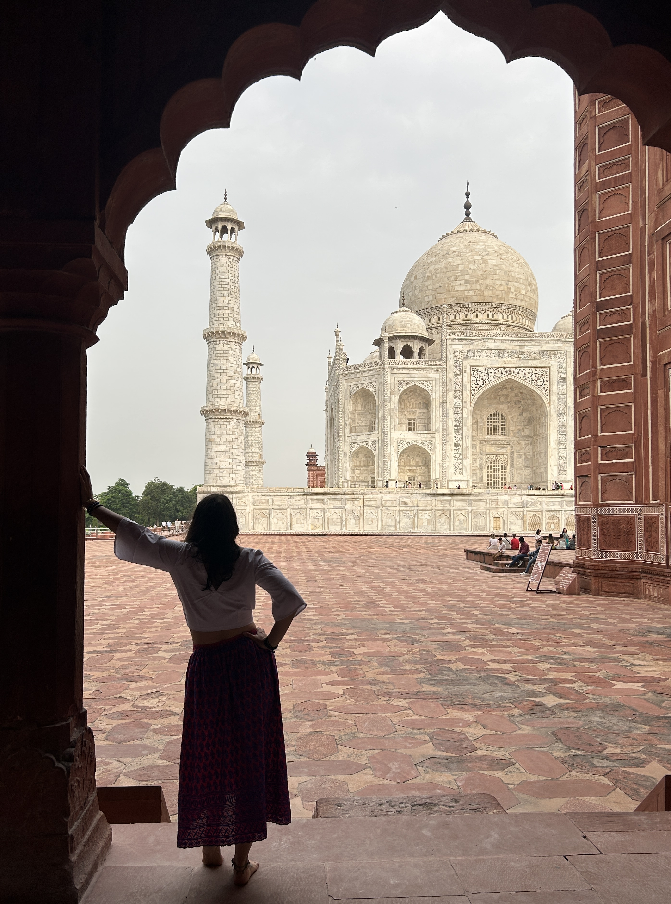
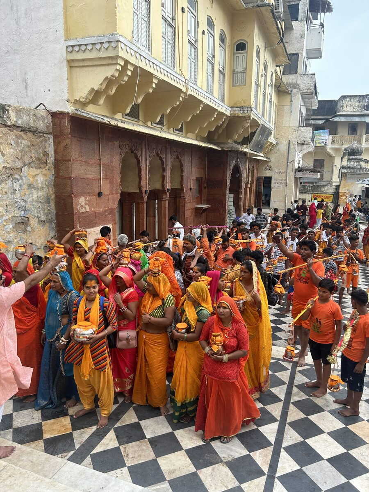
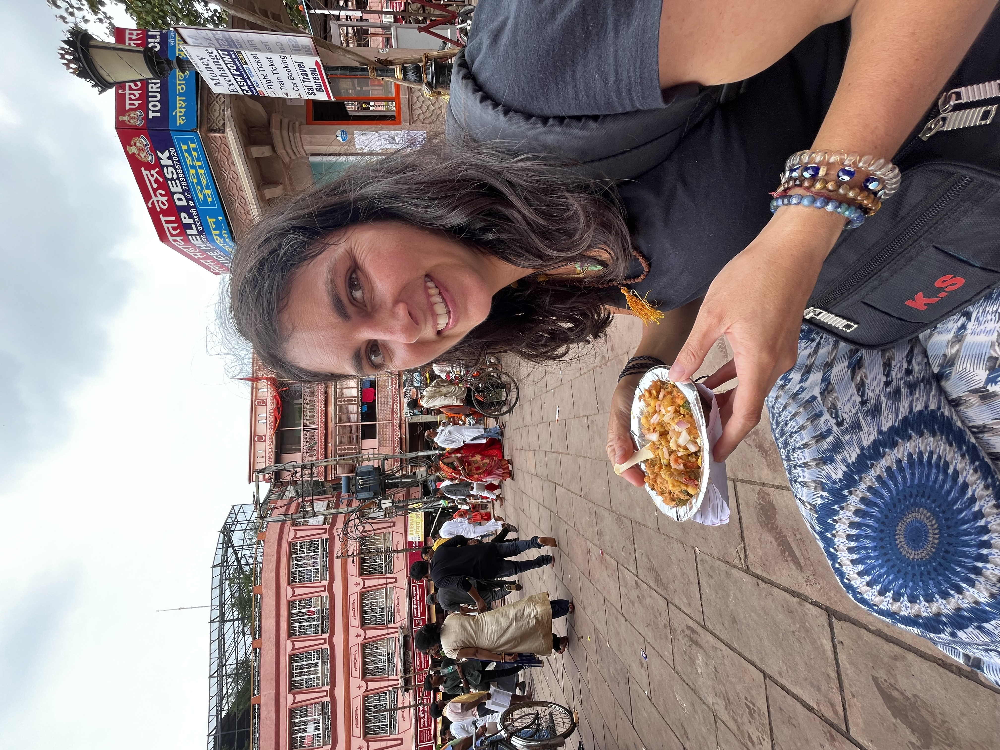
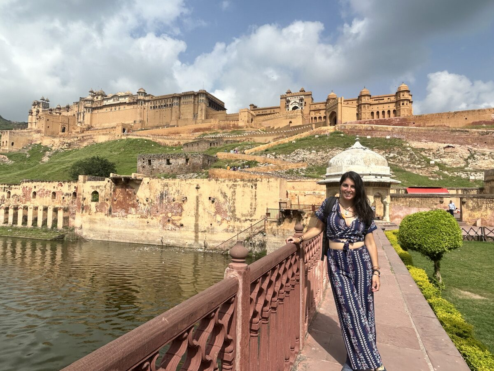

La rata
Reflexiones desde India

Se acerca el final del viaje y, con él, cierta melancolía y muchísimo amor.
No puedo dejar de sentir el más profundo agradecimiento por todo lo que he vivido. Por todo lo que ya he integrado durante este viaje y por todo el trabajo que sé que vendrá después. Porque hay viajes que no terminan cuando vuelves a casa. Empiezan entonces.
Lloro de amor y de emoción.
Amor por este gran país, que durante estas semanas se convirtió en maestro y espejo, mostrándome exactamente lo que necesitaba ver.
Y emoción porque el amor que siento por India es tan grande que, aunque sé que volveré algún día, no sé cuándo será.
El trabajo del merecimiento
Uno de los grandes regalos de este viaje ha sido el trabajo sobre el merecimiento.
Recuerdo mi primer viaje a India. Volví un poco traumatizada y, sobre todo, llena de culpa. Sentía que nos habíamos alojado en hoteles demasiado buenos y que no habíamos vivido "la verdadera India".
Esta vez llegamos a Benarés.
El taxi nos dejó a un kilómetro del hotel porque era imposible acceder en coche por sus laberínticas calles.
Empezó a diluviar.
Con las mochilas a la espalda recorrimos una ciudad llena de vida... y también de mierda. Literalmente.
Llegamos al hotel.
Era un agujero.
Sin ventilación. Con un baño compartido que consistía en un agujero en el suelo. Sin papel higiénico. Con una ducha que daba bastante miedo.
Empapada, cansada y sobrepasada por los olores de aquella ciudad tan mágica como intensa, me di cuenta de algo muy sencillo.
Yo no quería quedarme allí.
Durante unos segundos apareció la culpa.
Pero esta vez la escuché... y no le hice caso.
Busqué otro hotel.
Pagamos.
Nos despedimos.
Y recorrimos otro kilómetro por aquellas calles que nunca olvidaré.
Puede parecer una decisión pequeña.
Para mí fue enorme.
Fue permitirme reconocer el valor de las cosas que hoy quiero para mi vida. Sin justificarme. Sin sentir culpa. Sin pensar que, para ser una buena persona, tengo que renunciar a aquello que me hace sentir en paz.
Ya instalada en el nuevo hotel pude darme una ducha y seguir maravillándome —y también estremeciéndome— con Benarés.

Lo que no puedes dejar de ver
Hay ciudades que no te permiten mirar hacia otro lado.
Los olores.
La pobreza.
Las personas.
Los animales.
La muerte.
La vida.
Todo ocurre al mismo tiempo.

⸻
Y entonces llegó la segunda prueba.
La rata.
La rata
Estábamos comiendo unas samosas en un puesto callejero antes de ir hacia la estación.

Un hombre apareció sujetando una rata enorme por la cola.
Todavía estaba viva.
La metió en una bolsa de plástico y siguió caminando.
Nunca olvidaré esa imagen.
Sentí cómo se me cerraba el estómago.
Horas después, ya en el tren, empezó una diarrea fortísima que me acompañó durante dos días.
Durante un tiempo pensé que había sido la comida.
Pero, poco a poco, entendí que no.
Había sido la rata.
O, mejor dicho, lo que aquella rata despertó dentro de mí.
Me puso delante, sin posibilidad de apartar la mirada, una realidad que existe aunque yo prefiera no verla.
Sí.
El mundo está lleno de injusticias.
Está lleno de sufrimiento.
Está lleno de mierda.
Y no voy a poder cambiarlo todo.
También comprendí algo que necesitaba escuchar.
Es normal que haya cosas que me produzcan rechazo.
Es normal que algunas imágenes me rompan por dentro.
Es normal que existan realidades con las que no conecto porque son radicalmente distintas a la vida que he tenido.
Y no tengo que sentir culpa por ello.
Lo que sí puedo hacer es agradecer profundamente las cartas que me han tocado en esta vida.
Y jugarlas lo mejor posible.
Contribuir desde donde estoy.
Aunque sea un poco.
Ayudar a que el mundo sea un lugar un poquito más consciente.
Nada más.
Agra
Y, curiosamente, dos días y dos trenes después llegó Agra.
Como si el viaje supiera exactamente cuándo era el momento de volver a enseñarme la belleza.
Un buen hotel.
Una ducha caliente.
Vestirme de princesa para visitar el Taj Mahal.
Volver a conectar con mi amor propio.
Con mi parte femenina.
Con la belleza.
Frente al monumento más perfecto que he visto jamás construido por el ser humano, volví a enamorarme del mundo.
Y ahora escribo estas líneas desde un rooftop de Jaipur.

Integrando los últimos días por Rajastán.
Sintiendo que este país, una vez más, me está regalando la despedida perfecta.
Gracias.
Gracias.
Gracias.